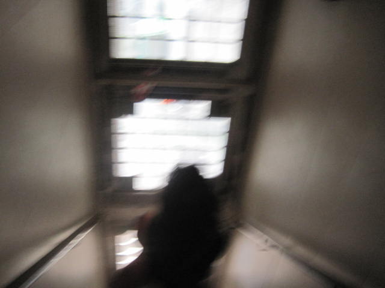

twitter
and notes to the self
added This
So I deleted twitter a couple months ago, thats kinda why im building this place. Having a place for people to be able to interface with my art and thoughts is nice, im kinda an ameture at everything though i hope thats ok.
god
do you belive in god?
im in the train and its running late. 
hungry
mm im hungry, food in like 2 hours proably
reviews
I think reviews, escpecially negative ones are very silly. Be skeptical of anyone who would rather bash down instead of pedastool up.
byee
byee
byee